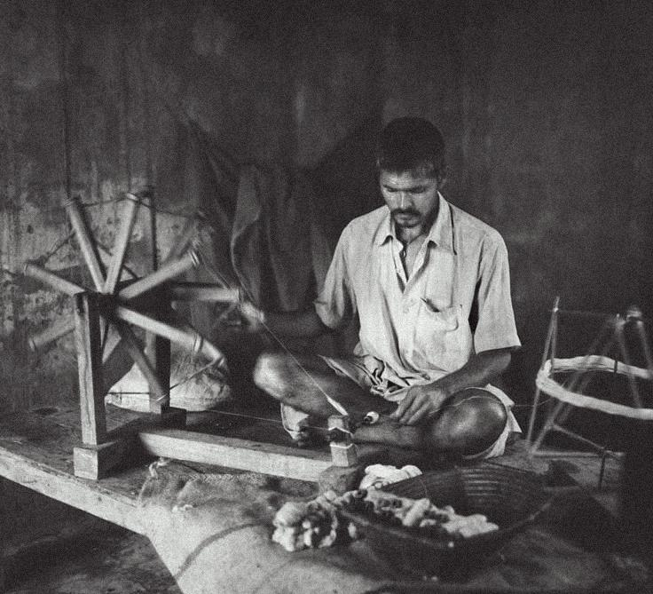
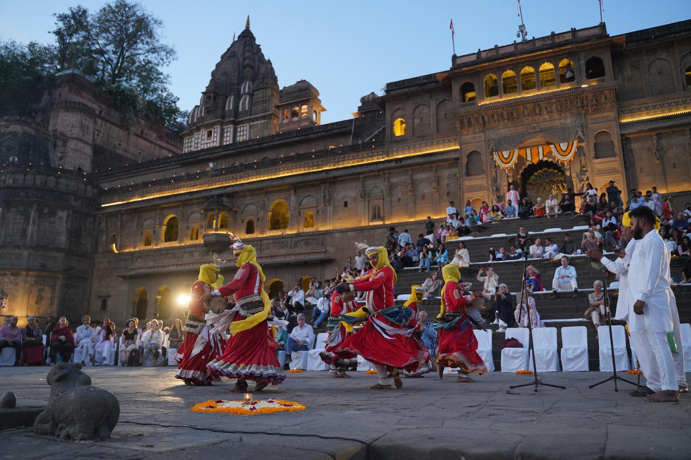

Mahashivratri
All-night celebrations at Narmada ghat and temples with chants, dance and food.
Celebrate the cultural heartbeat of Maheshwar — festivals full of music, devotion, art and lights.

All-night celebrations at Narmada ghat and temples with chants, dance and food.

River worship, floating diyas, and cultural performances on riverbanks.

Colorful dances and worship at temples during the 9 sacred nights.

Thousands of diyas light up ghats — the sight is truly divine!

Exhibition and sale of Maheshwari sarees & looms with weaver demos.

Renowned artists perform against the backdrop of Ahilya Fort and Narmada.